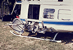

P.I.(s): S. Prasad Gogineni -- University of Kansas
GSRP Student: G. Lance Lockhart -- University of Kansas
Objectives: The objectives of this study are:
 The scatterometer on the NASA Helicopter
Get some RSS-13 data using FTP (BOREAS Investigators only, password required). [FTP Help]
Summary of Places and Times of Measurements:
The following table gives the day and type of data collected. We worked at the SSA during IFC-2 and IFC-3. However, system problems during IFC-2 make the data hard to interpret. Therefore, the table lists activities during IFC-3.
| Flight Number | Site Code | Incidence | Polarizations |
|---|---|---|---|
| 1 (9/14/94) | YJP - 0 | 5°,10°,15°,20° 30°,40°,50° | VV,HH,VH and HV |
| 1 (9/14/94) | YJP - 1 | 5°,10°,20°,30°40°,50° | VV,HH,VH and HV |
| 1 (9/14/94) | OBS (OS) | 5°,10°,20°,30°40°,50° | VV,HH,VH and HV |
| 2 (9/15/94) h = 110 ft | OA (Old Aspen) | 5°,10°,20°,30° 40°,50° | VV,HH,VH and HV |
| 2 (9/15/94) h = 110 ft | OBS (OS) | 5° | VV,HH,VH and HV |
| 2 (9/15/94) h = 170 ft | OBS (OS) | 5° | VV,HH,VH and HV |
| 2 (9/15/94) | OBS (OS) | 10°,20°,30°, 40°,50° | VV,HH,VH and HV |
| 3 (9/16/94) | YJP - 0 | 5°,10°,20°,30°40°,50° | VV,HH,VH and HV |
| 3 (9/16/94) | YJP - 1 | 5°,10°,20°,30° 40° | VV,HH,VH and HV |
RSS Overview || RSS-1 | RSS-2 | RSS-3 | RSS-4 | RSS-5 | RSS-6 | RSS-7 | RSS-8 | RSS-9 | RSS-10
RSS-11 | RSS-12 | RSS-13 | RSS-14 | RSS-15 | RSS-16 | RSS-17 | RSS-18 | RSS-19 | RSS-20
 Send a data request to the BOREAS Data Manager (BOREAS Investigators only)
Send a data request to the BOREAS Data Manager (BOREAS Investigators only)
E-Mail a comment on this page to the curator 
Send e-mail to Jaime Nickeson, the BORIS representative for the RSS group
Return to the RSS Overview
Return to the BOREAS Science Groups Overview
Return to the BOREAS Home Page
Last Updated: October 27, 1997
{kind=link}